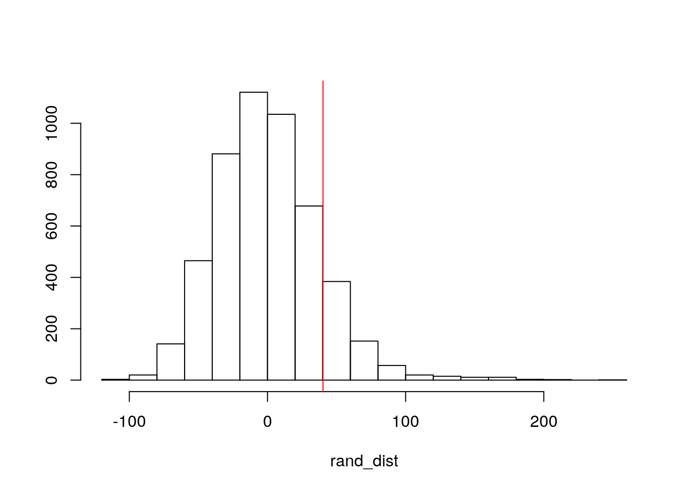
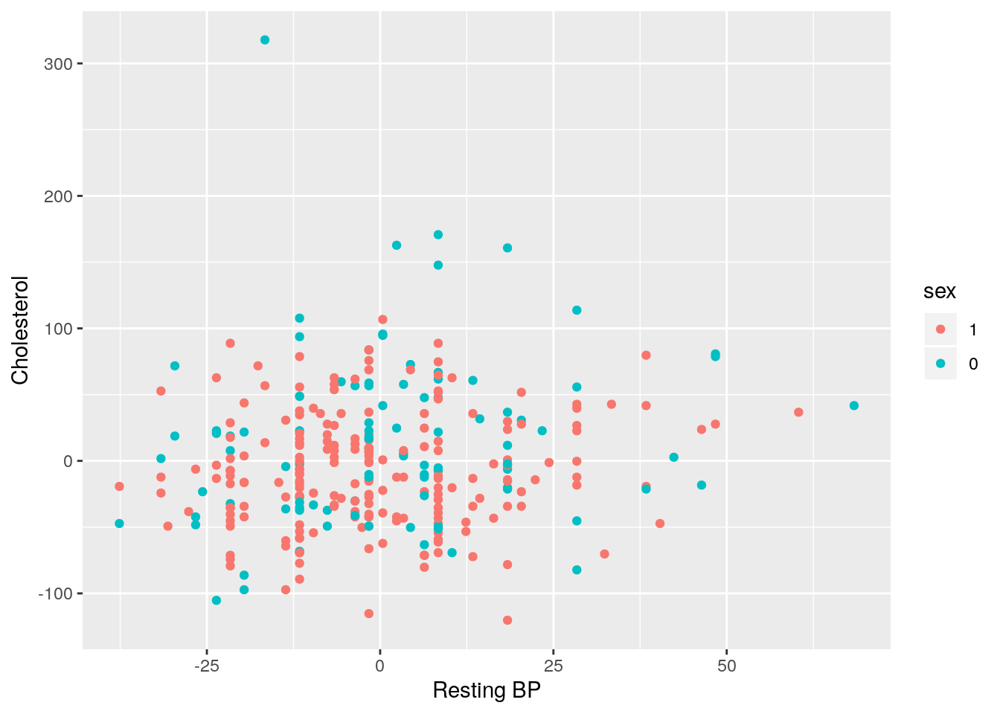
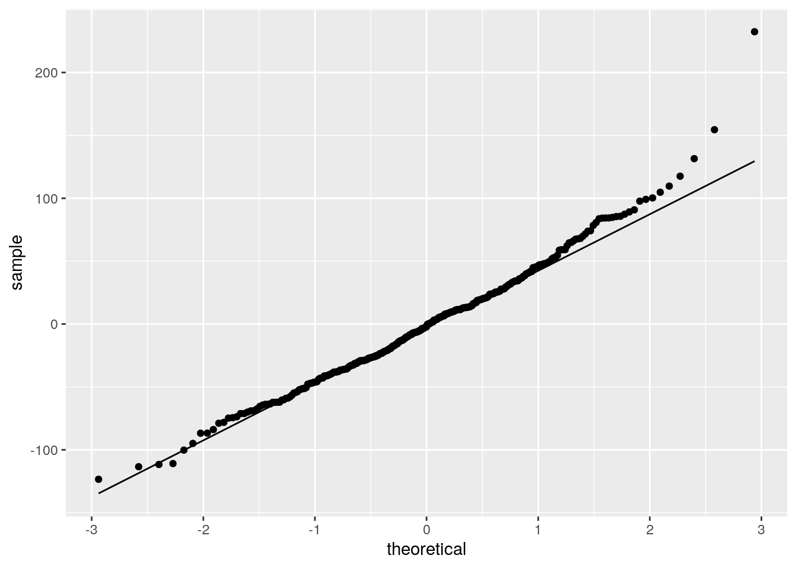
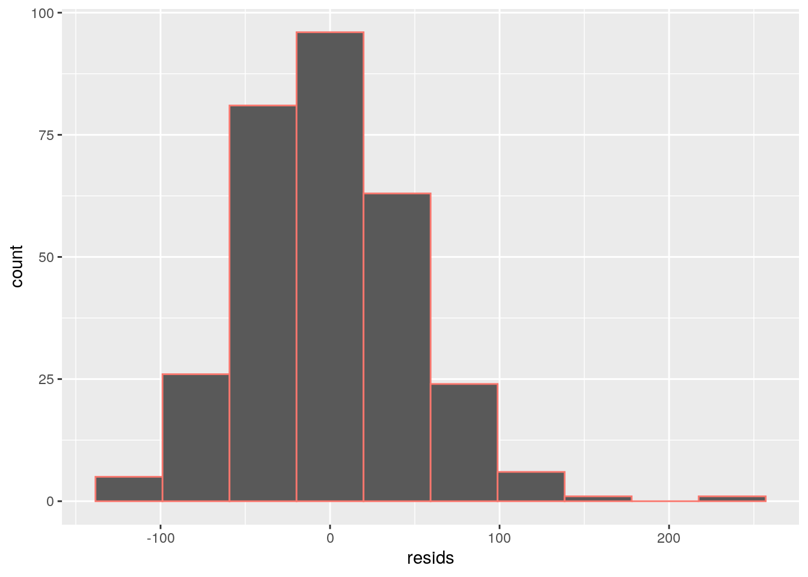
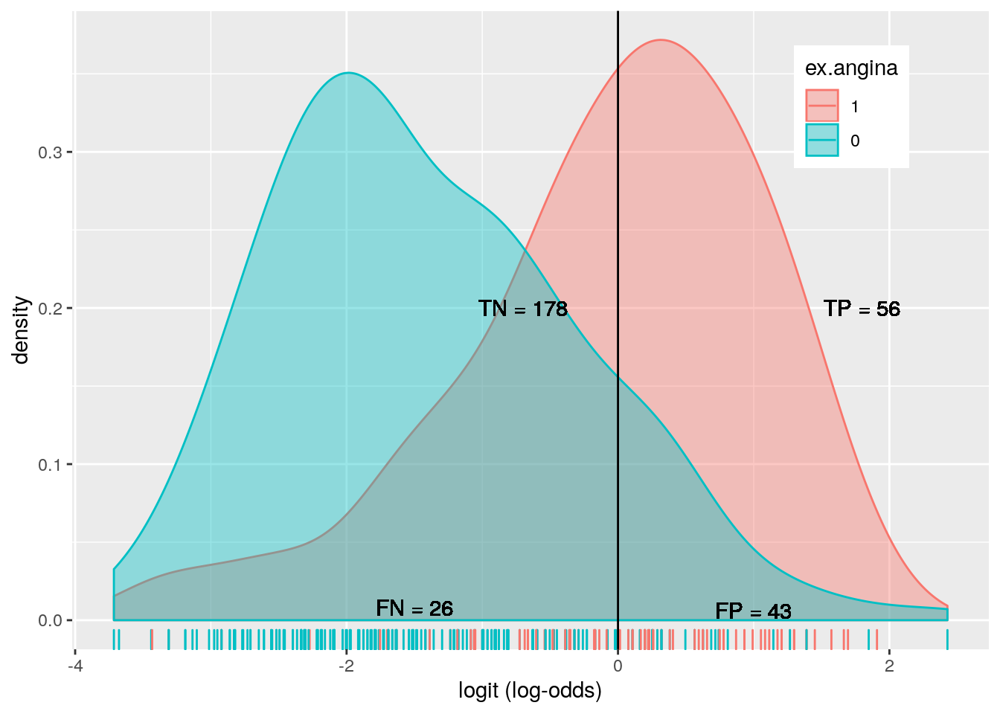
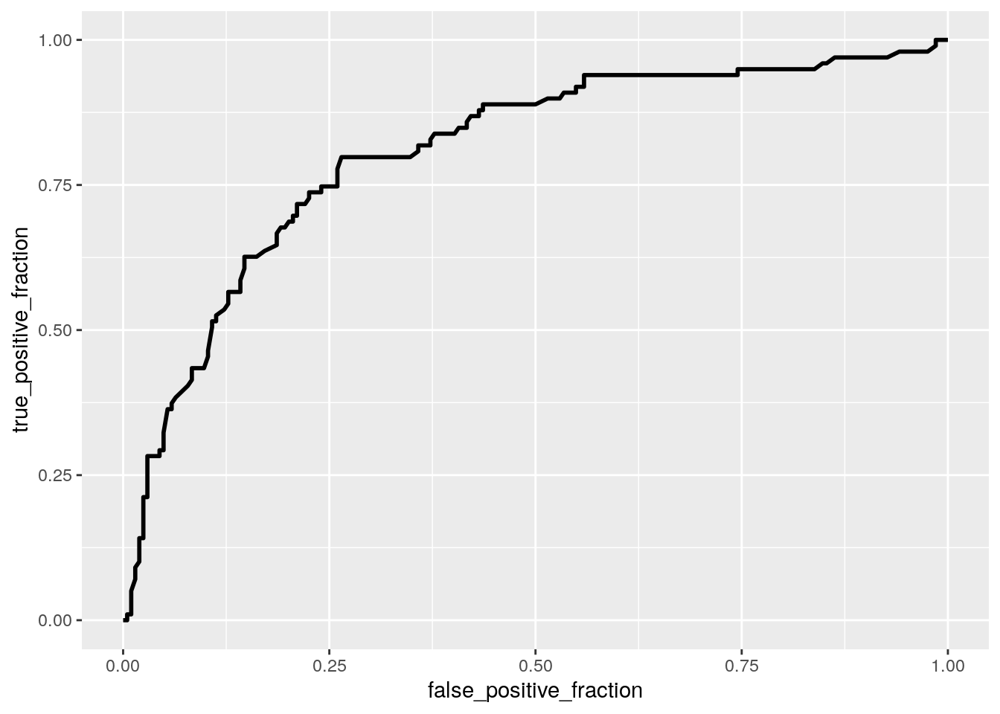

This dataset, “heart”, was found on kaggle.com. The data was collected in a hospital from 303 willing participants; the goal was to find possible trends in order to predict certain cardiovascular events or find any clear indications of heart health. It originially featured a set of 14 attributes that play a role in heart disease. Some of these variables were removed and some were renamed in order to create a dataset that is readily usable for this project. The remaining eight variables are as follows: “age”, measured in years; “sex”, with 1 representing male and 0 female; “chest.pain”, measured from 0 (absence of pain) to 3 (intense pain); “rest.BP”, the resting systolic blood pressure upon admission (measured in mmHg); “chol”, cholesterol measured in mg/dL; “maxHR”, maximum heart rate acheived (measured in beats/min); “ex.angina”, whether or not angina is induced upon exercising, with 0 representing the absence of and 1 representing angina; and “condition”, with 3 representing normal, 1 representing a fixed defect, and 2 representing a reversible defect in the heart.
heart <- read.csv("~/heart.csv")
library(dplyr)##
## Attaching package: 'dplyr'## The following objects are masked from 'package:stats':
##
## filter, lag## The following objects are masked from 'package:base':
##
## intersect, setdiff, setequal, unionheart<-heart%>%select(-restecg, -oldpeak, -slope, -ca, -target, -fbs)%>%rename(condition=thal, chest.pain=cp, maxHR=thalach, ex.angina=exang, rest.BP=trestbps)
heart$sex<-factor(heart$sex, levels=c(1,0))
heart%>%head## age sex chest.pain rest.BP chol maxHR ex.angina condition
## 1 63 1 3 145 233 150 0 1
## 2 37 1 2 130 250 187 0 2
## 3 41 0 1 130 204 172 0 2
## 4 56 1 1 120 236 178 0 2
## 5 57 0 0 120 354 163 1 2
## 6 57 1 0 140 192 148 0 1heart%>%nrow## [1] 303manova<-manova(cbind(rest.BP, maxHR, chol, age)~chest.pain, data=heart)
summary(manova)## Df Pillai approx F num Df den Df Pr(>F)
## chest.pain 1 0.1011 8.3787 4 298 2.038e-06 ***
## Residuals 301
## ---
## Signif. codes: 0 '***' 0.001 '**' 0.01 '*' 0.05 '.' 0.1 ' ' 1First, a MANOVA was run on the “heart” dataset, in order to determine if any of the numeric variables in the dataset (resting BP, max HR, cholesterol, and age) significantly differed among the categories of chest pain (0,1,2,3). It was found that the overall MANOVA test was significant (Pillai trace=0.10, pseudo F(4,298), p-value<0.0001), meaning that at least one of the dependent variables differed among the groups of chest pain. Thus, follow-up univariate ANOVAs were conducted for each variable.
summary.aov(manova)## Response rest.BP :
## Df Sum Sq Mean Sq F value Pr(>F)
## chest.pain 1 211 210.54 0.6838 0.4089
## Residuals 301 92681 307.91
##
## Response maxHR :
## Df Sum Sq Mean Sq F value Pr(>F)
## chest.pain 1 13860 13859.9 28.854 1.564e-07 ***
## Residuals 301 144583 480.3
## ---
## Signif. codes: 0 '***' 0.001 '**' 0.01 '*' 0.05 '.' 0.1 ' ' 1
##
## Response chol :
## Df Sum Sq Mean Sq F value Pr(>F)
## chest.pain 1 4798 4798.3 1.7908 0.1818
## Residuals 301 806503 2679.4
##
## Response age :
## Df Sum Sq Mean Sq F value Pr(>F)
## chest.pain 1 117.4 117.408 1.4254 0.2335
## Residuals 301 24792.9 82.369Of the four variables, only max HR was significantly different across at least one of the categories of chest pain, F(1,301)=28.854, p<0.0001. The next step was to run post hoc t tests to determine which categories of chest pain differed in terms of max HR.
pairwise.t.test(heart$maxHR, heart$chest.pain, p.adj="none")##
## Pairwise comparisons using t tests with pooled SD
##
## data: heart$maxHR and heart$chest.pain
##
## 0 1 2
## 1 1.2e-09 - -
## 2 3.2e-07 0.0713 -
## 3 0.0013 0.2273 0.9443
##
## P value adjustment method: none0.05/11## [1] 0.004545455The t tests revealed that patients who had no chest pain (value 0) significantly differed in max HR from those who rated their chest pain a 1, as well as from those who rated their chest pain a 2, as well as from those who rated their chest pain a 3. There was no significant difference between any of the other groups. Because 1 MANOVA, 4 ANOVAs, and 6 t tests were run, the probability of committing type 1 error is high. In order to control for Type I error rates, the Bonferroni correction method was utilized. The adjusted level of significance was found to be 0.0045. This did not affect any of the previous conclusions of significance. It is important to add that there are many assumptions to meet when running a MANOVA test. There were no tests run to determine multivariate normality of the dependent variables, homogeneity, linear relationships, outliers, or multicollineariity. Therefore, it is unlikely that all of these assumptions were met.
In order to conduct a randomization test on this dataset, null and alternative hypotheses had to be constructed. Null hypothesis: Cholesterol levels are the same for each heart condition. Alternative hypothesis: Cholesterol levels are not the same for each heart condition.
heart%>%group_by(condition)%>%filter(condition %in% c(0, 3))%>%summarize(means=mean(chol))%>%
summarize('mean_diff'=diff(means))## # A tibble: 1 x 1
## mean_diff
## <dbl>
## 1 40.2perm1<-data.frame(condition=heart$condition, chol=sample(heart$chol))
perm1%>%group_by(condition)%>%filter(condition %in% c(0, 3))%>%summarize(means=mean(chol))%>%summarize('mean_diff'=diff(means))## # A tibble: 1 x 1
## mean_diff
## <dbl>
## 1 36.7perm2<-data.frame(condition=heart$condition, chol=sample(heart$chol))
perm2%>%group_by(condition)%>%filter(condition %in% c(0, 3))%>%summarize(means=mean(chol))%>%summarize('mean_diff'=diff(means))## # A tibble: 1 x 1
## mean_diff
## <dbl>
## 1 -2.54perm3<-data.frame(condition=heart$condition, chol=sample(heart$chol))
perm3%>%group_by(condition)%>%filter(condition %in% c(0, 3))%>%summarize(means=mean(chol))%>%summarize('mean_diff'=diff(means))## # A tibble: 1 x 1
## mean_diff
## <dbl>
## 1 34.9rand_dist<-vector()
for(i in 1:5000){
new<-data.frame(chol=sample(heart$chol),condition=heart$condition)
rand_dist[i]<-mean(new[new$condition==0,]$chol)-
mean(new[new$condition==3,]$chol)}
{hist(rand_dist, main="", ylab=""); abline(v=40.2,col="red")}
mean(rand_dist>40.2 | rand_dist< -40.2) ## [1] 0.255After performing the randomization test and visualizing it with a histogram, the null hypothesis cannot be rejected, due to a non-significant two-tailed p-value (0.2484). Thus, it can be concluded that cholesterol levels are the same for each heart condition.
A linear regression was then performed in order to predict a response variable, cholesterol, from three other variables and their interactions–sex, resting BP, and condition. The numeric values (cholesterol and resting BP) were first mean-centered and renamed as “chol_c” and “rest.BP_c”.
heart1<-heart
heart1$rest.BP_c<-heart1$rest.BP-mean(heart1$rest.BP)
heart1$chol_c<-heart1$chol-mean(heart1$chol)
fit<-lm(chol_c~sex*rest.BP_c*condition, data=heart1)
summary(fit)##
## Call:
## lm(formula = chol_c ~ sex * rest.BP_c * condition, data = heart1)
##
## Residuals:
## Min 1Q Median 3Q Max
## -123.443 -32.904 -2.203 27.734 232.410
##
## Coefficients:
## Estimate Std. Error t value Pr(>|t|)
## (Intercept) -22.6184 12.9454 -1.747 0.081642 .
## sex0 -76.0041 30.5081 -2.491 0.013278 *
## rest.BP_c -0.4647 0.8189 -0.568 0.570789
## condition 6.5222 5.2004 1.254 0.210770
## sex0:rest.BP_c 4.8642 1.5276 3.184 0.001607 **
## sex0:condition 48.1249 14.0038 3.437 0.000674 ***
## rest.BP_c:condition 0.2679 0.3149 0.851 0.395515
## sex0:rest.BP_c:condition -2.1356 0.6618 -3.227 0.001393 **
## ---
## Signif. codes: 0 '***' 0.001 '**' 0.01 '*' 0.05 '.' 0.1 ' ' 1
##
## Residual standard error: 49.18 on 295 degrees of freedom
## Multiple R-squared: 0.1206, Adjusted R-squared: 0.09975
## F-statistic: 5.781 on 7 and 295 DF, p-value: 2.732e-06The intercept represents the reference group. In this case, the intercept represents the predicted cholesterol value for a female (value of 0) with average resting blood pressure and a normal heart condition, as -98.62 mg/dL. Each coefficient represents to what degree the intercept will go up or down for every one-unit increase in each. Because there are so many coefficients listed, I will only explain a few. For example, the coefficient “age” represents an increase of 76 mg/dL in cholesterol if the subject is male, while controlling for all other variables. Likewise, the “rest.BP_c” coefficient shows that for each one unit increase in resting blood pressure, there is an increase of 4.4 mg/dL of cholesterol, regardless of all other variables. For the interaction coefficient “sex:condition”, when controlling for resting BP, the slope for sex on cholesterol is 48.12 lower for those with heart conditions, compared to those with a normal heart condition.
library(ggplot2)
hearts<-heart1
hearts$sex<-factor(hearts$sex, levels=c(1,0))
ggplot(hearts, aes(x=rest.BP_c, y=chol_c, group=sex))+
geom_point(aes(color=sex)) + xlab("Resting BP") +ylab("Cholesterol")
#linearity
resids<-fit$residuals
fitvals<-fit$fitted.values
ggplot()+geom_qq(aes(sample=resids))+geom_qq_line(aes(sample=resids)) 
#normality
ggplot()+geom_histogram(aes(resids, color="blue"), bins=10)+ theme(legend.position="none")
ks.test(resids, "pnorm", mean=0, sd(resids))## Warning in ks.test(resids, "pnorm", mean = 0, sd(resids)): ties should not be
## present for the Kolmogorov-Smirnov test##
## One-sample Kolmogorov-Smirnov test
##
## data: resids
## D = 0.041229, p-value = 0.6816
## alternative hypothesis: two-sided#homoskedasticity
library(sandwich); library(lmtest)## Loading required package: zoo##
## Attaching package: 'zoo'## The following objects are masked from 'package:base':
##
## as.Date, as.Date.numericbptest(fit)##
## studentized Breusch-Pagan test
##
## data: fit
## BP = 33.266, df = 7, p-value = 2.362e-05As can be seen above, the first plot shows that the assumption of linearity is met. The second plot shows that the assumption of normality is met. Additionally, a KS test was run and the p-value was not significant, meaning that the assumption of normality is definitely met. Lastly, to test for homoskedasticity, the BP test was utilized, giving a significant p-value, meaning that this assumption was not met.
coeftest(fit) ##
## t test of coefficients:
##
## Estimate Std. Error t value Pr(>|t|)
## (Intercept) -22.61835 12.94543 -1.7472 0.0816418 .
## sex0 -76.00413 30.50806 -2.4913 0.0132779 *
## rest.BP_c -0.46473 0.81887 -0.5675 0.5707887
## condition 6.52224 5.20040 1.2542 0.2107695
## sex0:rest.BP_c 4.86416 1.52762 3.1841 0.0016071 **
## sex0:condition 48.12492 14.00383 3.4366 0.0006738 ***
## rest.BP_c:condition 0.26792 0.31487 0.8509 0.3955146
## sex0:rest.BP_c:condition -2.13556 0.66182 -3.2268 0.0013927 **
## ---
## Signif. codes: 0 '***' 0.001 '**' 0.01 '*' 0.05 '.' 0.1 ' ' 1coeftest(fit, vcov=vcovHC(fit)) ##
## t test of coefficients:
##
## Estimate Std. Error t value Pr(>|t|)
## (Intercept) -22.61835 11.35377 -1.9921 0.04728 *
## sex0 -76.00413 71.48780 -1.0632 0.28857
## rest.BP_c -0.46473 0.68242 -0.6810 0.49641
## condition 6.52224 4.57414 1.4259 0.15496
## sex0:rest.BP_c 4.86416 3.05538 1.5920 0.11246
## sex0:condition 48.12492 34.99971 1.3750 0.17017
## rest.BP_c:condition 0.26792 0.26162 1.0241 0.30663
## sex0:rest.BP_c:condition -2.13556 1.47353 -1.4493 0.14832
## ---
## Signif. codes: 0 '***' 0.001 '**' 0.01 '*' 0.05 '.' 0.1 ' ' 1Above, the normal-theory standard errors of the regression are compared to the robust standard errors run on the same regression models. The robust standard errors are quite a bit larger than the normal-theory SEs; in fact, all of the coefficient values were significant with the normal SEs, but with the robust SEs, there is no longer a single significant coefficient. The proportion of variation in cholesterol explained by this model is 0.09975. This is the adjusted R-squared value from summary(fit).
samp_bse<-replicate(5000, {
boot_dat <- sample_frac(heart1, replace=T)
fitbse<-lm(chol_c~sex*rest.BP*condition, data=boot_dat)
coef(fitbse)})
samp_bse%>%t%>%as.data.frame%>%summarize_all(sd)## (Intercept) sex0 rest.BP condition sex0:rest.BP sex0:condition
## 1 90.34791 449.2832 0.6683838 34.69663 3.104871 220.042
## rest.BP:condition sex0:rest.BP:condition
## 1 0.256683 1.510464In comparison to the normal standard errors, many of the bootstrapped standard errors are much, much higher–namely, the intercept, sex, condition, and sex:condition coefficients. The other coefficients are reasonably close to the robust standard errors. However, each one is higher than its corresponding robust standard error, so it can be concluded that none of the bootstrapped standard errors are significant.
library(lmtest)
heart1$maxHR_c<-heart1$maxHR-mean(heart1$maxHR)
fitlin<-glm(ex.angina~maxHR+sex+chest.pain, data=heart, family=binomial)
coeftest(fitlin)##
## z test of coefficients:
##
## Estimate Std. Error z value Pr(>|z|)
## (Intercept) 4.5961551 0.9809196 4.6856 2.792e-06 ***
## maxHR -0.0305405 0.0066808 -4.5714 4.844e-06 ***
## sex0 -0.6178638 0.3136634 -1.9698 0.04886 *
## chest.pain -0.8234645 0.1613775 -5.1027 3.348e-07 ***
## ---
## Signif. codes: 0 '***' 0.001 '**' 0.01 '*' 0.05 '.' 0.1 ' ' 1exp(coef(fitlin))## (Intercept) maxHR sex0 chest.pain
## 99.1025438 0.9699212 0.5390948 0.4389084The intercept represents the reference group; specifically, the odds of a male patient with an average heart rate and no chest pain NOT experiencing angina upon exercising is 99.1. For the maxHR coefficient, when controlling for sex and chest pain, the odds of not experiencing angina upon exercising increases by a factor of 0.9699. For the sex0 coefficient, when controlling for maxHR and chest pain, the odds of not experiencing angina increases by a factor of 0.539. Finally, for the chest.pain coefficient, when controlling for maxHR and sex, the odds of not experiencing angina increase by a factor of 0.439.
library(tidyr)
probs1<-predict(fitlin, type="response")
table(predict=as.numeric(probs1>0.5), truth=heart1$ex.angina)%>%addmargins## truth
## predict 0 1 Sum
## 0 178 43 221
## 1 26 56 82
## Sum 204 99 303#Sensitivity (TPR)
56/99## [1] 0.5656566#specificity (TNR)
178/204## [1] 0.872549#precision (PPV)
56/82## [1] 0.6829268#Accuracy
(56+178)/303## [1] 0.7722772library(ggplot2)
heart1$ex.angina<-factor(heart1$ex.angina, levels=c(1,0))
heart1$logit<-predict(fitlin,type="link")
heart1%>%ggplot()+geom_density(aes(logit, color=ex.angina, fill=ex.angina), alpha=.4)+geom_rug(aes(logit, color=ex.angina))+theme(legend.position=c(.85,.85))+geom_vline(xintercept=0)+xlab("logit (log-odds)")+
geom_text(x=-0.7,y=.2,label="TN = 178")+ geom_text(x=-1.5,y=.008,label="FN = 26")+
geom_text(x=1,y=.006,label="FP = 43")+
geom_text(x=1.8,y=.2,label="TP = 56")
library(plotROC)
heartroc<-heart1%>%mutate(y=ifelse(ex.angina==0,0,1))
heartroc$prob<-predict(fitlin,type="response")
ROCplot<-ggplot(heartroc)+geom_roc(aes(d=y, m=prob), n.cuts=0)
ROCplot
calc_auc(ROCplot)## PANEL group AUC
## 1 1 -1 0.8067439This ROC plot is far from perfect, but it is not terrible. According to the rules of thumb for AUC, this model fits in the fair/good category, with an AUC value of 0.8067.
heart2<-heart1
set.seed(1234)
k=10
data<-heart2[sample(nrow(heart2)),]
folds<-cut(seq(1:nrow(heart2)), breaks=k, labels=F)
class_diag <- function(probs,truth){
tab<-table(factor(probs>.5,levels=c("FALSE","TRUE")),truth)
acc=sum(diag(tab))/sum(tab)
sens=tab[2,2]/colSums(tab)[2]
spec=tab[1,1]/colSums(tab)[1]
ppv=tab[2,2]/rowSums(tab)[2]
if(is.numeric(truth)==FALSE & is.logical(truth)==FALSE) truth<-as.numeric(truth)-1
ord<-order(probs, decreasing=TRUE)
probs <- probs[ord]; truth <- truth[ord]
TPR=cumsum(truth)/max(1,sum(truth))
FPR=cumsum(!truth)/max(1,sum(!truth))
dup<-c(probs[-1]>=probs[-length(probs)], FALSE)
TPR<-c(0,TPR[!dup],1); FPR<-c(0,FPR[!dup],1)
n <- length(TPR)
auc<- sum( ((TPR[-1]+TPR[-n])/2) * (FPR[-1]-FPR[-n]) )
data.frame(acc,sens,spec,ppv,auc)
}
diags<-NULL
for(i in 1:k){
train<-data[folds!=i,]
test<-data[folds==i,]
truth<-test$ex.angina
fitk<-glm(ex.angina~maxHR_c+sex+chest.pain, data=heart2, family="binomial")
probsk<-predict(fitk, newdata=test, type="response")
diags<-rbind(diags, class_diag(probsk, truth))
}
summarize_all(diags, mean)## acc sens spec ppv auc
## 1 0.7722581 0.8718864 0.5619414 0.8014469 0.8015514The average out-of-sample accuracy was found to be 0.772, the sensitivity 0.872, and the recall 0.801. This represents a fair/good model but it could be better.
library(glmnet)## Loading required package: Matrix##
## Attaching package: 'Matrix'## The following objects are masked from 'package:tidyr':
##
## expand, pack, unpack## Loading required package: foreach## Loaded glmnet 2.0-16y<-as.matrix(heart2$ex.angina)
x<-model.matrix(ex.angina~., data=heart2)[,-1]
x<-scale(x)
cv<-cv.glmnet(x,y,family="binomial")
lasso<-glmnet(x,y,family="binomial", lambda=cv$lambda.1se)
coef(lasso)## 12 x 1 sparse Matrix of class "dgCMatrix"
## s0
## (Intercept) -0.7967525
## age .
## sex0 .
## chest.pain .
## rest.BP .
## chol .
## maxHR .
## condition .
## rest.BP_c .
## chol_c .
## maxHR_c .
## logit 0.6775472After running a LASSO regression, the only variables retained are “chest.pain”, “maxHR”, and “condition”.
set.seed(1234)
k=10
data2<-heart2[sample(nrow(heart2)),]
folds2<-cut(seq(1:nrow(heart2)), breaks=k, labels=F)
diags2<-NULL
for(i in 1:k){
train2<-data2[folds!=i,]
test2<-data2[folds==i,]
truth2<-test2$ex.angina
fit3<-glm(ex.angina~maxHR_c+sex+chest.pain, data=heart2, family="binomial")
probs3<-predict(fit3, newdata=test2, type="response")
diags2<-rbind(diags2, class_diag(probs3, truth2))
}
summarize_all(diags2, mean)## acc sens spec ppv auc
## 1 0.7722581 0.8718864 0.5619414 0.8014469 0.8015514After running the ten-fold cross validation, it can be seen that the accuracy of this model is the same as the logistic regression run in part 5.